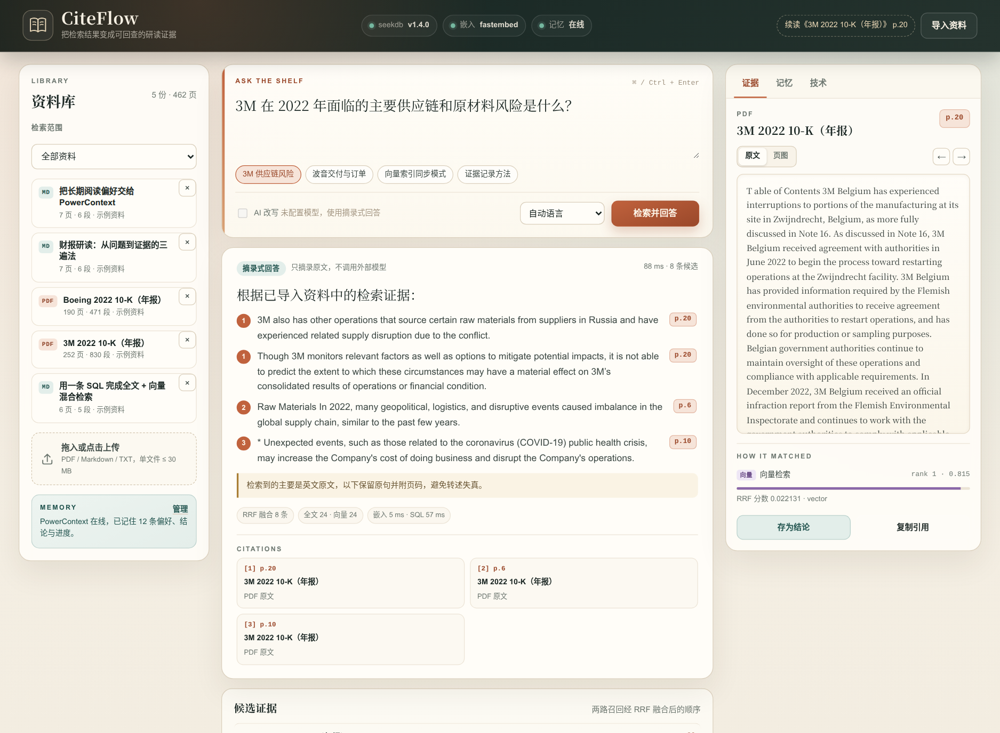
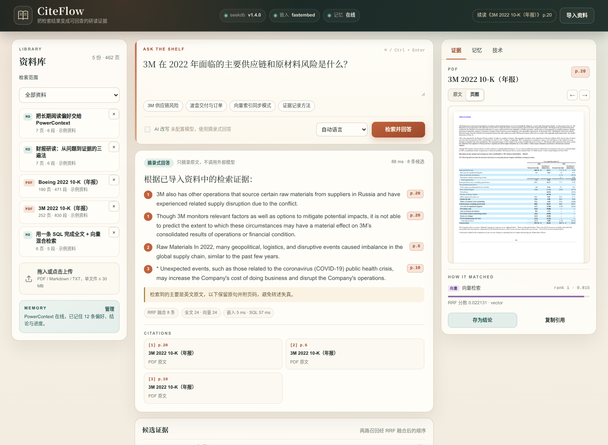
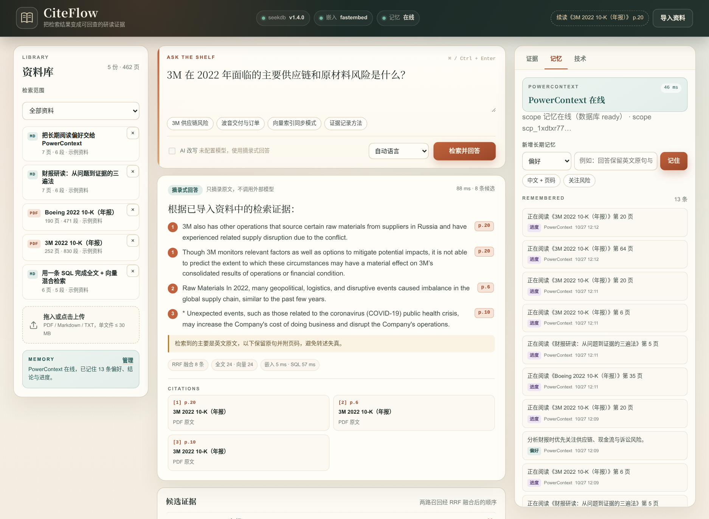
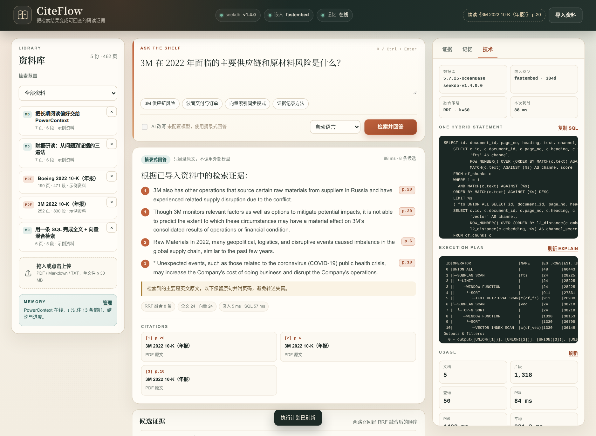
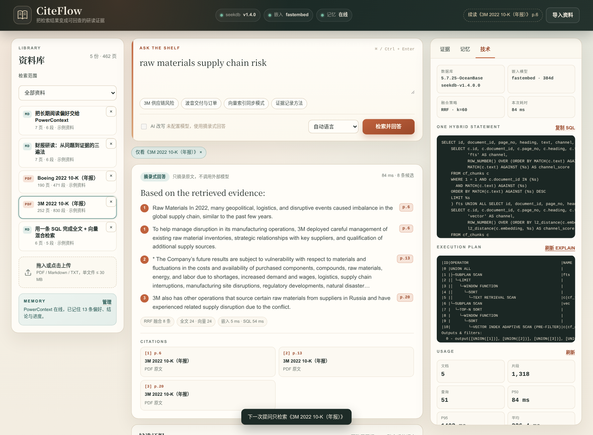
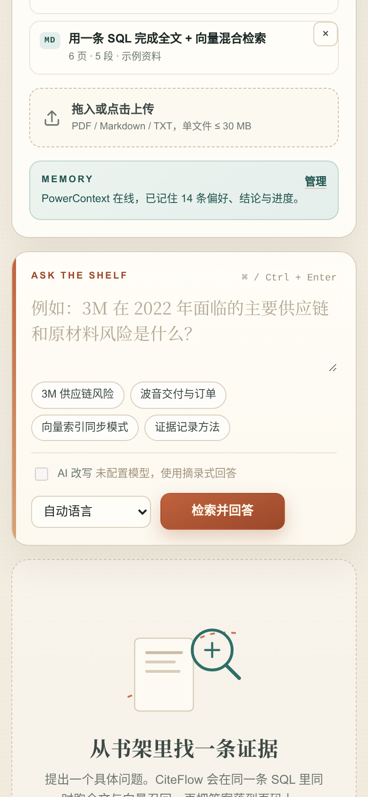

下一页，在哪里？
几十份 PDF 里，上次读到的位置只存在于记忆里。重新翻一遍，半小时就没了。
找不到位置01 / 问题
资料越来越多，真正耗时的不是「读」，而是读完之后的找回、核对和续读。 通用聊天框能给出答案，却给不出一条能走回去的路。
几十份 PDF 里，上次读到的位置只存在于记忆里。重新翻一遍，半小时就没了。
找不到位置流畅的结论看起来都对，却无法回到原文确认限定词、时间范围和数据口径。
无法核对偏好、结论和阅读进度散落在聊天记录里。换一个会话，就像换了一个不认识你的助手。
无法续读“相关”不等于“充分”。研读需要的是证据，不是一段看起来很顺的答案。
CiteFlow 把这三件事接成一个闭环：检索、回查、记住。
PDF、Markdown、TXT 进入本地书架，按页 / 节切块，SHA-256 去重。
5 份样例 · 1,318 片段一条 SQL 同时跑 IK 全文和 HNSW 向量，集合 / 文档过滤在库内下推。
FTS 24 + VECTOR 24 → RRF 8回答里每条要点都带页码，点击即可看原文，PDF 还能切换页图核对版式。
[n] → p.20 → p.6 → p.10偏好、结论和进度写入 PowerContext；新会话自动召回，并镜像到 seekdb。
remember → search → context.prepare02 / 功能
从导入到证据页，从记忆到查询日志，每个环节都能独自解释自己。 复杂的东西留在下面，界面上只保留下一步动作。
混合检索
全文候选和向量候选在同一条 statement 内完成排序与截断，应用层只做 RRF 融合。
证据
引用只保留真正用到的页，编号连续；PDF 可以切到页图，核对表格与版式。
记忆
偏好、结论与进度写入 PowerContext；提问时召回，并把内容注入回答上下文。
跨语言
多语言嵌入让中文问题命中英文财报；命中主要是英文时，回答保留原句并提示原因。
离线优先
本地 ONNX 嵌入 + 摘录式回答是默认路径；配置任意 OpenAI 兼容模型后，才切成综述式表达。
透明
PowerContext 停机、嵌入模型不可用、LLM 未配置，界面都会说明当前走的是哪条路径。
03 / 界面
下面每一张都是真实运行页面，由 Playwright 在本地应用上截取。 先看回答，再点引用，最后打开计划——证据链是连贯的。

四条要点只使用三个真正被引用的页码；右侧直接显示命中通道、排名与 RRF 分数。
两个公开 10-K、三份中文笔记；上传上限 30 MB，按哈希去重。没有资料时提供一键样例。

PDF 页图由 pypdfium2 在本地渲染；表格、脚注和段落位置可以按原样核对。

每条记忆都显示后端、时间与 request id；服务停机时自动切到 seekdb 镜像，并明确标记降级。

每次提问保留 SQL、双通道计数、耗时和 EXPLAIN；评审不需要读源码才能确认索引确实被使用。

文档条件在向量索引扫描前下推，计划出现 VECTOR INDEX ADAPTIVE SCAN (PRE-FILTER)；结果只来自 3M 年报。

三栏在 390 px 宽度下收成单列；提问、引用和页图仍在同一页面内完成。
截图脚本：scripts/capture_screenshots.py · 浏览器：Playwright Chromium 1187
04 / 技术
不是把两个检索器串起来，而是在 seekdb 的一条 statement 内完成全文与向量的候选生成； RRF 在应用层只做最后的排序决策。过滤条件跟着查询一起下推。
MATCH(c.text) AGAINST (%s) 在 FULLTEXT INDEX ... WITH PARSER ik 上排序，中文与英文都能命中。
l2_distance(...) + ORDER BY ... APPROXIMATE 走 VECTOR INDEX，384 维、vsag、立即同步。
1 / (60 + rank^1.5) 抑制「两路都一般」的候选；标题实体命中再加权 1.35。
集合与文档条件同时进入两个分支；单文档查询的计划出现 ADAPTIVE SCAN (PRE-FILTER)。
SELECT id, document_id, page_no, heading, text, channel, rank_in_channel
FROM (
SELECT c.*, 'fts' AS channel,
ROW_NUMBER() OVER (ORDER BY MATCH(c.text) AGAINST (%s) DESC) AS rank_in_channel
FROM cf_chunks c
WHERE 1 = 1 AND c.document_id IN (%s, ...)
AND MATCH(c.text) AGAINST (%s) -- IK 全文
ORDER BY MATCH(c.text) AGAINST (%s) DESC
LIMIT 24
) fts
UNION ALL
SELECT id, document_id, page_no, heading, text, channel, rank_in_channel
FROM (
SELECT c.*, 'vector' AS channel,
ROW_NUMBER() OVER (ORDER BY l2_distance(c.embedding, %s) ASC) AS rank_in_channel
FROM cf_chunks c
WHERE 1 = 1 AND c.document_id IN (%s, ...)
ORDER BY l2_distance(c.embedding, %s) APPROXIMATE -- HNSW
LIMIT 24
) vec;| 5 |│ └─TEXT RETRIEVAL SCAN|c(cf_ft) |
|10| └─VECTOR INDEX SCAN |c(cf_vec)|全文与向量各自扫描，再由 UNION ALL 合并。计划来自真实 EXPLAIN，不是手写示意。
| 5 |│ └─TEXT RETRIEVAL SCAN |c(cf_ft) |
|10| └─VECTOR INDEX ADAPTIVE SCAN (PRE-FILTER)|c(cf_chunk_doc)|文档过滤在向量扫描前下推，避免「先取全库近邻、再丢掉别的文档」。
存储 · 检索 · 日志
记忆 · 上下文
context.prepare 注入回答开发 · 调试 · 验证 · 站点
scp_1xdtxr77pssa6gy4jb5ff1tta0
remember a2ca86d235a4670b
search 1d48bc4e2807e3a3
prepare 1e003b8eaa8a89a1
写入 → 召回 → 上下文 → 回答注入，四步都有原始记录；完整内容见 验证文档。
05 / 验证
验证脚本按真实 HTTP 请求跑完整条链路：导入、提问、点引用、取原文、看计划、写记忆、读统计。 任一检查失败，脚本以非零状态退出。
样例查询 · 3M 2022 10-K
87 ms · 8 候选3M also has other operations that source certain raw materials from suppliers in Russia and have experienced related supply disruption due to the conflict.
[1] p.20Raw Materials In 2022, many geopolitical, logistics, and disruptive events caused imbalance in the global supply chain, similar to the past few years.
[2] p.6回答保留英文原句并附页码；中文提问时明确提示未做转述，避免失真。
关键检查
verify_demo.py关于“使用效果”：这里展示的是开发期本机真实验证数据，不是外部用户规模，也没有伪造好评或提效故事。真实用户的试用与前后耗时对比仍在收集中，后续会以同样可核对的日志和授权截图补充。
06 / 使用记录
CiteFlow 记录每一次检索：用了哪种模式、延迟多少、命中几个片段。
这些数字来自 seekdb 里的 cf_queries，不是前端统计或手工填写的展示值。
当前是开发期自测数据。没有付费流量，没有虚构用户评价。 下一步是邀请同学试用，记录「整理一次文献」的前后耗时，再补充到这里。
查看导出数据来源：GET /api/stats · 2026-10-27 12:18 UTC+8 · 开发期本机数据
快照时间：2026-10-27 12:18 UTC+8 · 数据源：GET /api/stats
07 / 运行
默认路径不需要云端模型：本地 ONNX 嵌入 + 摘录式回答。 seekdb 必须有；PowerContext 可选，缺失时自动降级。
Python 3.11+；seekdb 1.4.x 监听 2891。可选 PowerContext 1.2+，独立端口 17429。
启动脚本会创建虚拟环境、安装依赖、拉起 seekdb（若已配置）、尝试 PowerContext，最后启动 CiteFlow。
页面上点「导入样例」，或运行下方脚本。两份 10-K 与三份中文笔记共 1,318 个片段。
打开 127.0.0.1:8848，试问「3M 在 2022 年面临的主要供应链和原材料风险是什么？」然后点击任意引用。
# 1. 获取代码
git clone -b 2026-competition-ecosystem \
https://github.com/AndyCuihaoyi/powercontext-2026.git
cd powercontext-2026/qoder
# 2. 可选配置（默认值即可运行）
cp .env.example .env
# 3. 启动 seekdb + PowerContext + CiteFlow
scripts/run.sh
# 4. 导入样例并跑完整验证
.venv/bin/python scripts/seed_demo.py
.venv/bin/python scripts/verify_demo.py
# 5. 打开工作台
open http://127.0.0.1:8848设置 CITEFLOW_EMBEDDING_BACKEND=hash，用确定性向量完成全部演示；界面会标注降级。
设置 CITEFLOW_POWERCONTEXT=off，或让它自动降级到 seekdb 镜像；记忆功能仍可演示。
在 .env 填 OpenAI 兼容的 base URL、key 和模型名；未配置时保持摘录式回答。
08 / QODER
从读题、技术探针、编码到浏览器调试与验证，主要开发工作在 Qoder 会话中完成。 开发记录不只列成功结果，也保留失败、根因和修复。
阅读赛题与工作区规范，确定「可回查证据的研读助手」方向；把网站、可运行、Qoder 记录、技术结合四项验收映射到具体文件与命令。
在 seekdb 1.4 上实测 IK、HNSW、单 SQL、过滤下推和 EXPLAIN；确认 PowerContext 的基础记忆无需模型 Key 也能工作。
数据层、解析切块、嵌入、混合检索、证据回答、记忆、HTTP API 与原生前端；每一层都能单独解释。
引用对象与索引混用、EXPLAIN 在多字节边界被截断、Playwright 选择器失配、10-K 跨页重复句……每个故障都有根因和处理记录。
14 个自动化测试、24 项端到端检查、真实浏览器截图、README、架构与验证文档，以及你现在看到的项目网站。